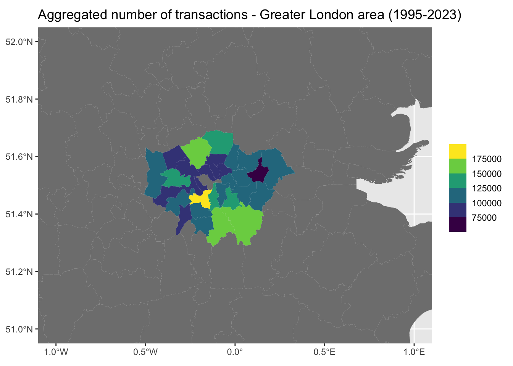

UK real estate transactions
Technical warnings
For simplicity, the final databases used in this document are available from: https://www.dropbox.com/scl/fo/9c04715s1hkowsf0vnk70/h?rlkey=7r3x8pm6y9nkcdiusfhmq2ulb&dl=0 We recommend you download this folder and place all files in the “data” folder of your own repository.
/! WARNING: you need to run this chunk because the last released version (0.1.4) introduces a bug leading to the following “Error: arguments have different crs”. You might need to launch a new R session if you used the last version of transformr.
Optionally run this chunk if some of the packages we use are not installed on your computer.
Research question presentation
Through this report, we want to explore the determinants of real estate transactions in England and Wales. We will do so by utilizing a diverse set of variables from a variety of government sources.
In this study, we aim at determining which factors contribute to the variation in the number and the price of real estate transactions in the United Kingdom, and to what extent do the location of the property, interest rate, inflation, average income in the area, population density, and seasonality patterns influences these transactions?
First findings and proposal of further analysis:
There is a clear drop in the number of transactions around the financial crisis of 2008. This was preceded by a stagnation in the average yearly price. The Quantitative Easing starting in 2015 could also explain the price peaking in the same year.
Moreover, The number of transactions plummets in 2020 due to the Covid crisis and is followed by a substantial rebound in 2021. Finally, it seems the year 2023 cannot be taken into account because we are missing data from the last months.
Our future analysis will focus on:
- Look for seasonality in the evolution of the number of transactions.
- Analyse the evolution of the price of transactions.
- Producing a geographical analysis of both prices and the number of transactions.
- Using machine learning techniques (clustering) to find correlations between socio-demographics factors and our variables of interest.
Data sets description
We use two main datasets in this study.
First dataset: micro-level transaction data
Our first dataset consists of the description of 28634236 real estate transactions using 17 variables between 1995 and 2023.
The main variables are:
- price_paid is the sale price stated on the transfer deed.
2 and 3) The name of the following variables are self-explanatory:year,month.
msoa indicates the Middle Layer Super Output Areas (MSOA), which is a geographic hierarchy designed to improve the reporting of small area statistics in England and Wales. The minimum population is 5000 and the mean is 7200. This is the geographical granularity level that we will use through all our study.
households refers to the mean household disposable (net) income on an equivalised basis for middle layer super output areas (MSOAs) in England and Wales. Equivalisation is the process of accounting for the fact that households with many members are likely to need a higher income to achieve the same standard of living as households with fewer members.
Second dataset: macro-level transaction data
Our second dataset consists of the description of 348 real estate transactions using 6 variables on a monthly basis between 1995 and 2003.
The variables are:
CPI is the Consumer Price Index in the UK provided by the Office for National Statistics.
rate is the benchmark interest rate decided by the Bank of England.
nb_transac is the number of transactions in the UK.
mean_price is the mean nominal price of all the transactions in the UK.
real_price is the mean real price of all the transactions in the UK, obtained by deflating the mean nominal price using the CPI.
date indicates the month and the year for which the data is relevant.
Data analysis
Time series analysis: number of transactions
Using our main dataset, we have created a time series containing the number of monthly transactions from 1995 to 2023.
This first graph allows us to observe 5 important facts:
1) There is a clear seasonality in the evolution of the number of monthly transactions.
2) The number of sales plunged during the 2008 sub-prime crisis.
3) The first lock down (march 2020) was also synonymous of a large slow-down in the number of transaction.
4) The effect depicted in (4) was quickly followed by a catch-up effect in 2021.
5) The number of sales seems to be quickly falling in 2023.
We will dedicate the next section to the analysis of the seasonality of this time series. Regarding the impact of crisis (sub-prime and COVID-19) on the real estate market, a large literature is already available and we decided not to spend to much time on those topics.
Seasonality study
Graphical analysis (1)
Just by studying graphically the time series, we are inclined to conclude that it is highly likely that the number of transactions per month is affected by a seasonality phenomena.
The general pattern is especially clear between 2000 and 2005 for instance. The number of transactions is at its lowest every beginning of a new year, and rises sharply until it reaches its highest point around what is likely the end of spring and the summer (a more rigorous study of the patterns will be done later on). Then it drops dramatically until December, to start the new year at a low point.
However, this graphical analysis in itself is not sufficient to conclude with certainty that the time series has a seasonal trend. We will then proceed with more rigorous tests in order to detect seasonality.
Testing for seasonality (1)
ADF test (1)
We begin with an Augmented Dickey Fuller test. Even though we are aware that the ADF test is not a seasonality test per se, our idea behind this is that if we are unable to detect stationarity in our initial time series, and then, if after de-trending the seasonality in our time series by using a twelfth difference filter (because we use monthly data), we are able to detect stationarity, we can conclude that we have corrected the time series of its seasonal trend component, and that our initial time series is affected by seasonality.
Formally, the ADF test is a unit root test. Imagine we have a time series model of the following form :
\[ Y_t = \mu + \alpha Y_{t-1} + \epsilon_t \quad \textrm{AR(1)} \]
The hypothesis for the simple Dickey-Fuller test would be:
\[ H_0: \alpha = 1 \quad \textrm{versus} \quad H_A: \alpha \neq 1 \]
And more generally, for any ARIMA model, we can apply the same principle but including high order regressive process in our model equation using the ADF test, with a model of the form:
\[ Y_t = \mu + \beta t + \alpha Y_{t-1} + \phi_{1}\Delta Y_{t-1} + \phi_{2}\Delta Y_{t-2} + \quad \textrm{...} \quad + \phi_{p}\Delta Y_{t-p} + \epsilon_t \quad \] Where \(\mu\) denotes the drift of the process, and \(t\) the trend.
The hypothesis remains the same, and can be understood as:
\[ H_0: \quad \textrm{The time series is non-stationary} \quad \textrm{versus} \quad H_A: \textrm{The time series is stationary} \] Now to the test. We use the function ‘ur.df’ of the ‘urca’ package to realize the test. Note that we select the relevant time series model (ie which order of lags should we select) by discriminating among different high order regressive process models using the Akaike Information Criterion. We only allow for models up to the twelth order, because we have monthly data. We include a drift but no trend because there does not seem to be a general trend over the whole period when we look at the time series graphically.
The regression and test’s results are:
###############################################
# Augmented Dickey-Fuller Test Unit Root Test #
###############################################
Test regression drift
Call:
lm(formula = z.diff ~ z.lag.1 + 1 + z.diff.lag)
Residuals:
Min 1Q Median 3Q Max
-70711 -7451 1253 7124 73720
Coefficients:
Estimate Std. Error t value Pr(>|t|)
(Intercept) 6255.83602 3557.97902 1.758 0.079663 .
z.lag.1 -0.07758 0.04136 -1.876 0.061609 .
z.diff.lag1 -0.39888 0.06609 -6.035 4.40e-09 ***
z.diff.lag2 -0.27650 0.06952 -3.977 8.64e-05 ***
z.diff.lag3 0.19506 0.07073 2.758 0.006152 **
z.diff.lag4 0.00524 0.07099 0.074 0.941204
z.diff.lag5 -0.05209 0.06965 -0.748 0.455099
z.diff.lag6 -0.24462 0.06665 -3.670 0.000284 ***
z.diff.lag7 -0.24955 0.06519 -3.828 0.000155 ***
z.diff.lag8 -0.11886 0.06622 -1.795 0.073621 .
z.diff.lag9 -0.03255 0.06653 -0.489 0.624953
z.diff.lag10 -0.04920 0.06659 -0.739 0.460599
z.diff.lag11 -0.03291 0.06292 -0.523 0.601355
z.diff.lag12 0.20522 0.05597 3.666 0.000288 ***
---
Signif. codes: 0 '***' 0.001 '**' 0.01 '*' 0.05 '.' 0.1 ' ' 1
Residual standard error: 13510 on 319 degrees of freedom
Multiple R-squared: 0.4217, Adjusted R-squared: 0.3981
F-statistic: 17.89 on 13 and 319 DF, p-value: < 2.2e-16
Value of test-statistic is: -1.8757 1.8264
Critical values for test statistics:
1pct 5pct 10pct
tau2 -3.44 -2.87 -2.57
phi1 6.47 4.61 3.79We see that the selected best model according to the AIC is the model going up to the twelfth order. Because our t-stat (round(1.8264357),2) for the \(\alpha\) component of the estimated model is lower in absolute value compared to the 5% critical value of the associated distribution (3.79), we fail to reject \(H_0\) at the 5% level of significance, ie we cannot conclude that our time series is stationnary.
Graphical analysis (2)
Now let us de-trend the possible seasonal part of the process by applying a twelfth order difference filter.
First, we plot this corrected time series:
Graphically, it seems like we have no seasonal trend anymore. We are unable to visually detect a seasonal pattern.
Testing seasonality (2)
ADF test (2)
Then, we proceed with the ADF test, using again the same method for picking up the appropriate model in terms of regressive process order.
###############################################
# Augmented Dickey-Fuller Test Unit Root Test #
###############################################
Test regression drift
Call:
lm(formula = z.diff ~ z.lag.1 + 1 + z.diff.lag)
Residuals:
Min 1Q Median 3Q Max
-83762 -4031 1497 6348 64755
Coefficients:
Estimate Std. Error t value Pr(>|t|)
(Intercept) -497.75048 806.89020 -0.617 0.537774
z.lag.1 -0.25797 0.06267 -4.116 4.96e-05 ***
z.diff.lag1 -0.34672 0.06876 -5.042 7.87e-07 ***
z.diff.lag2 -0.08945 0.07067 -1.266 0.206552
z.diff.lag3 0.38765 0.06984 5.551 6.16e-08 ***
z.diff.lag4 0.26472 0.07289 3.632 0.000330 ***
z.diff.lag5 0.12318 0.07409 1.663 0.097430 .
z.diff.lag6 0.09097 0.07280 1.250 0.212405
z.diff.lag7 0.04218 0.07207 0.585 0.558823
z.diff.lag8 0.10660 0.07140 1.493 0.136459
z.diff.lag9 0.09550 0.07165 1.333 0.183602
z.diff.lag10 0.06840 0.07172 0.954 0.340952
z.diff.lag11 0.08625 0.06874 1.255 0.210560
z.diff.lag12 -0.21722 0.05976 -3.635 0.000326 ***
---
Signif. codes: 0 '***' 0.001 '**' 0.01 '*' 0.05 '.' 0.1 ' ' 1
Residual standard error: 14440 on 307 degrees of freedom
Multiple R-squared: 0.5033, Adjusted R-squared: 0.4823
F-statistic: 23.93 on 13 and 307 DF, p-value: < 2.2e-16
Value of test-statistic is: -4.1161 8.6455
Critical values for test statistics:
1pct 5pct 10pct
tau2 -3.44 -2.87 -2.57
phi1 6.47 4.61 3.79Again, we see that the selected best model according to the AIC is the model going up to the twelth order. Because our t-stat (1.8264357) for the \(\alpha\) component of the estimated model is now higer in absolute value compared to the 5% critical value of the associated distribution (3.79), we reject \(H_0\) at the 5% level of significance, ie we conclude that our time series is now stationnary.
This first test seems to indicate that the number of transactions has a seasonal pattern. However, we are aware that the ADF test is not a proper time series seasonality test. We want to reinforce this first result by using a real seasonality test.
WO combined seasonality test
We use the ‘seastests’ package, developped by Daniel Ollech from the Bundesbank. The package documentation is available at https://cran.r-project.org/web/packages/seastests/seastests.pdf. We realize the Ollech-Webel overall seasonality test that combines result from two seasonality tests, the QS test and the KW-test. The test hypothesis are:
\[ H_0: \quad \textrm{The time series does not have a seasonal trend} \quad \textrm{versus} \quad H_A: \textrm{The time series has a seasonal trend} \]
The results are:
Test used: WO
Test statistic: 1
P-value: 2.953193e-14 0 0
The WO - test identifies seasonalityTest used: WO
Test statistic: 0
P-value: 1 1 0.9997651
The WO - test does not identify seasonalityWe see that the OW combined seasonality test identifies seasonality in the first time series, but does not identify seasonality in the second time series with a twelth order difference filter. This furthers reinforce our belief that the number of transactions has a seasonal pattern.
Time series decomposition: graphical analysis
Now that we believe our time series has a seasonal trend, we want to decompose the initial times series into several components (trend, seasonal and stochastic). Note that we decompose our time series as an additive time series, because when we analyse it graphically, we see that the difference between each year is mainly a difference in the average level of transactions each year, and not much a difference between the amplitude of the change in the number of transactions from one month to another inside a specific year.
Graphically, the decomposition gives us:
Several interesting observations can be made using these graphs.
Looking at the trend, we can decompose it in different periods. The first one would be from 1995 to 2007, with an overall steady rise in the number of transactions. This takes place until the 2008 economic crisis creeps in, with a sharp decline in the trend of the number of transactions. After reaching this lowest point, the trend is mostly constant between 2009 and 2013 and 2015 and 2020, with only a slight increase between 2013 and 2015. We must be careful about interpreting the trend of the time series in the period following the outburst of Covid-19. As the UK was in lockdown, this artificially created a drop in the number of transactions in the first part of 2020, followed by a catch-up until the beginning of 2021. Those events are represented in the trend graph, but cannot be considered as a real trend as it was artificially created. Eventually, the catch-up is followed by a fast decline in the trend until the end of our study period, probably due to the economic slowdown, the high inflation and the resulting interest rates hikes by the Bank of England.
Regarding the stochastic part of the decomposition, we can mainly note the fact that the variance of the random element of the process is steady over the whole period, except between 2020 and 2022 where it rises dramatically. This invites us to be even more cautious when it comes to interpreting the trend of the process in this period, as the amount of unexplained variance in the number of transactions is much more important.
Focus on the seasonality component
Eventually, the seasonal trend can be decomposed into several principal periods each year. Let us graph the seasonal component over only one year to realise such a decomposition.
The first period is from February until July with a fast rise from the lowest point up to the highest point of the year in terms of the number of transactions. Then there is a slight decrease in August and September, and then we stay on an high plateau until the end of the year. If the high seasonal trend from June to September can be explained by the fact that most families try to move in their new homes during the summer holidays such that their children do not have to change school in the middle of the year, the drop in the seasonal trend between December and January is harder to explain.
Additionnal analysis: bank rate vs. number of transactions
One of the main explanations for the recent slow-down on the market has been the rise in housing loan rates. We decided to compare side-by-side the evolution of the Bank of England rate (which is a good proxy for the loan rates) and the number of transactions on the 1995-2023 period. The following graph let us see that there is a clear inverse relationship between the Bank of England recent increase in its rate and the plunging number of transactions. However, we fill like this explanation is not totally satisfying as the real estate market seemed to behave normally between 1995 and 2009 whereas rates were at even higher levels than nowadays.
Thus, one could conclude that what really matters is less the level of the bank rate than its direction. In other words, it is not the high levels of bank rates that had a negative impact on the number of transactions, but their fast increase. In fact, people might expect (or at least wait) for a decrease in bank rates before considering buying a new house.
Time series analysis: prices
Transaction prices distribution
The second key variable we are interested in is the price of transactions. First, we observe that the distribution of prices is heavily right-skewed. In fact, 99% of transactions are below 1.13^{6} pounds and, more importantly, 95% of transactions do not exceed 5.5^{5} pounds.
Price evolution: nominal vs. real
Visual analysis
If we now look at the evolution of prices since 1995, we can see a very steep increase in the average price of transactions. It is also interesting to note that prices have been a lot more volatile since the COVID-19 crisis.
However, when looking at the real prices, we realise that most of the increase took place between 1995 and 2009. While prices have increased again between 2014 and 2021, it seems they are back to their 2009 level in 2023 (or even a little below).
One additional observation is that the 2008 sub-prime crisis had a greater impact on the number of transactions than on the average price.
Finally, the price decrease which started at the end of 2022 is not only due to the recent high levels of inflation. In fact, both real and nominal prices are affected.
Linear regression
| Dependent variable: | |
| mean_price | |
| nb_transac | 0.026** |
| (0.010) | |
| year | 12,671.210*** |
| (277.872) | |
| Constant | -25,254,912.000*** |
| (560,272.700) | |
| Observations | 28 |
| R2 | 0.988 |
| Adjusted R2 | 0.987 |
| Residual Std. Error | 11,647.590 (df = 25) |
| F Statistic | 1,061.461*** (df = 2; 25) |
| Note: | p<0.1; p<0.05; p<0.01 |
What we can conclude from this regression is: 1) On average, prices have increases by £12,671 per year 2) While being statistically significant at the 5% level (**), the effect of the number of transactions over price is not economically relevant. In fact, the coefficient is equal to 0.026, meaning that if we were to double the number of transactions (ie, a 100% increase from roughly 100 000 per year to 200 000 per year), the average price of a transaction would increase by £2,600.
Geographical analysis: number of transactions
Aggregated number of transaction on the 1995-2023 period
The following map depicts the spatial distribution of the aggregated number of transactions over the 1995-2023 period. Each geographical area corresponds to a local authority.
Number of transactions vs. population
Looking at the number of transactions from a geographical point of view allows us to observe a large discrepancy between regions. However, at this stage of the analysis, we can not draw any further conclusion since the regions in which there were a lot of transactions are also the most populated ones. In fact, 9 of the most populated cities in the UK are among the top 10 local areas in terms of number of transactions (see table below).
Country level
| Local authority | Number of transactions | Population | Rank (population) |
|---|---|---|---|
| Birmingham | 418 155 | 1 142 494 | 1 |
| Leeds | 380 918 | 809 036 | 2 |
| Wiltshire | 258 990 | 513 411 | 8 |
| County Durham | 252 614 | 521 346 | 7 |
| Bradford | 248 721 | 546 976 | 5 |
| Sheffield | 231 459 | 554 401 | 3 |
| Bristol, City of | 228 182 | 471 117 | 10 |
| Manchester | 227 546 | 549 853 | 4 |
| Cheshire East | 218 044 | 400 528 | 12 |
| Liverpool | 200 637 | 484 488 | 9 |
Zoom on London
It is important to note that since London is divided in not less than 31 local authorities, it does not appear in the preceding table. However, in this period the ‘Greater London’ area accounted for 13 % of the total transactions (exactly 3519255 transactions).

Zooming on the Greater London area, we can see that the number of transactions is quite high (considering the size of each local area) and relatively evenly distributed. In fact, in this region, the average number of transactions is 113524, compared with the national average of 83203. Moreover, as we can see on the map, in most local areas, the number of transactions lied between 100 000 and 150 000 transactions.
When correcting for the population levels, we observe that the number of transactions is more evenly distributed. We can also note that the most attractive regions seem to be the ones one the coasts. On the contrary, the regions around Wales and the Northern territories have, on average, a lower number of transactions.
Geographical analysis: prices
Average price on the 1995-2023 period
Country level visual analysis
Just as in the first part, we will now have a look at the distribution of the average price of transactions. For this first map, the figures are “raw”. In fact, we did not take into account inflation, nor any other socio-demographic variable. Therefore, this map only depicts the average price of transactions over the whole period.
The figure above demonstrates the depth of the division between London and the rest of the UK when it comes to the average price of transactions. Going a little further, we can regroup the UK in 4 main regions according to the average transaction price: - The greater London area, with the highest average transaction price.
- Midlands and Wales, with the lowest average transaction price.
- South and East England, with a lower-medium average transaction price.
- Industrial cities of the North (Manchester, Liverpool, Leeds), with a lower-medium average transaction price as well.
Zoom on London
Once more, it is interesting to zoom on the Greater London area. We don’t have data on the very central local authorities (too small) of Westminster (City of) and London (City of), but we see that the districts with the highest average price are the central ones, namely Kensington & Chelsea (in yellow) and Camden (in green). It is also worth noting that as soon as you move apart from the center, the average price quickly becomes similar to the rest of England.
Up to this point, our analysis was mainly based on visual observation of our data. We decided to go a little further and try to see if we could use more advanced data science and statistical methods to corroborate our findings.
A little machine learning science: clustering in theory
This part of the analysis will use clustering to form several different groups (ie clusters) containing all the price of the transactions from 1995 to 2023. Then, we will do a geographical analysis of those clusters and see if the areas sharing a lot of transactions in the same clusters also share common characteristics.
Mainly, clustering aims at partitioning the data into distinct groups so that the observations within each group are quite similar to each other, and data in different groups are quite different from each other. To do so, we will use K-means clustering, ie we partition the data into a pre-specified number of clusters.
K-means clustering consists into partitioning the data such that within cluster variation is a small as possible, ie we want to solve the problem:
\[ \quad \textrm{minimize}_{~~C_1,...,C_K}\quad\sum_{k=1}^{K} WCW(C_k) \quad(1) \] Where \(WCW(C_k)\) denotes the within cluster variation for cluster \(C_k\), and is defined using Squared Euclidean distance:
\[WCW(C_k) = \frac{1}{|n_k|}\sum_{i,i'\in C_k}\sum_{j=1}^{p}(x_{ij}-x_{i'j})^2 \] Where \(n_k\) denotes the number of observations in cluster the \(k\)th cluster.
In practice, the K-means clustering algorithm randomly allocates a number from 1 to \(K\) to each of the observations, forming randomly K initial clusters. Then it iterates a procedure that consists in calculating the centroid for each cluster, and then allocate each point to the cluster whose centroid is the closer in terms of Squared Euclidean distance, until we reach a stable assignment of observations in each clusters.
Because the initial assignment is random, repeating the procedure can yield different results, and we need to specify the number of times the K-means must be done. Eventually, we keep the result of the K-means clustering with the lowest (1).
Clustering in practice
To recap, first, each transaction has been assigned to a cluster based on its price. Then we associated each local authority level with the corresponding cluster mode (ie, the most frequent cluster in all transactions that took places in this specific local authority). Finally, we draw a map associating each local authority to the average transaction price in the cluster (ie, the centroid).
Country level
We obtain very similar results with the clustering method, leading us to confirm our previous analysis in terms of spatial distribution of prices. More precisely, we observe: - High prices around London. - Moderate prices in the East, the South and the industrial North. - Low prices in the Midlands and at the border with Scotland.
Zoom on London
Once more, results are quite similar with the ones from the previous section with very high prices in the centre of London, high prices in the first circle and prices close to the national average when going a little further.
Socio-demographics of clusters
In the previous part, we showed that clusters matched with the geographical distribution of average transaction prices. We are now interested in the socio-demographic determinants of real estate transactions.
We stayed at the local authority level and looked at both the average population and average income in each cluster. Since our data on income levels started in 2011, we took the mean income over the 2011-2021 period. The results can be seen in the table below.
| Cluster | Average transaction price | Average population | Average income |
|---|---|---|---|
| 5 | 54696 | 198144.9 | 35300.05 |
| 6 | 112410 | 172056.1 | 39892.45 |
| 3 | 169765 | 167045.0 | 45638.66 |
| 8 | 234735 | 175651.5 | 55264.35 |
| 7 | 394798 | 116020.0 | NaN |
| 1 | 664833 | 143940.0 | 60003.81 |
| 10 | 894678 | 116020.0 | NaN |
The main conclusion we can draw from this new perspective, and it should not come as a surprise, the higher the transaction price, the higher the average income in the cluster. The size (in terms if population) of the local authorities does not seem to have a great impact on the clustering, and therefore on the prices.
Wrapping-up: spatiotemporal patterns
While the first section was devoted to the temporal analysis of prices and number of transactions, the second focused solely on the geographical distribution of our key variables. This third and last section will explore the combination of those two aspects.
This first animated map summaries perfectly what we have seen so far. First, there is a large discrepancy in the distribution of the number of real estate transactions at the country level. Second, the sub-prime crisis of 2008 and the COVID-19 crisis had a huge impact on the number of transactions.
While this last figure is interesting as it shows that the main driver to the evolution of nominal prices is indeed time, it is important to remember that both geographical and temporal effects are playing at the same time. In fact, we see that the map shifts from dark blues to light greens and yellow (temporal effect), but, this shift starts from London, then spreads to the regions around London, then to the industrial North and finally to the rest of the UK (geographical effect).
Conclusion
What are the main findings of our analysis?
We find strong evidence of a seasonality pattern in the registered number of real estate transactions each year. There is two distinct periods: an high seasonal trend from June to September that could be explained by the fact that most families try to move in their new homes during the summer holidays such that their children do not have to change school in the middle of the year, and a low seasonal trend between December and January.
The evolution of the number of transactions over longer periods of time can also be analysed through the movement of the bank rate. We find that what really matters is less the level of the bank rate than its direction, as people may still contract an loan to buy real estate in an high bank rate environment if they expect this rate to remain constant in the next years, and conversely if they expect a decrease.
The Covid-19 and the post pandemic periods are associated with an overall increase in the volatility of the prices and the number of transactions.
The most attractive regions in terms of the number of transactions per inhabitant are the ones on the coasts and the less attractive ones are the regions around Wales and the Northern territories.
When looking at the prices, we can regroup the UK in 4 main regions according to the average transaction:
The greater London area, with the highest average transaction price.
Midlands and Wales, with the lowest average transaction price.
South and East England, with a lower-medium average transaction price.
Industrial cities of the North (Manchester, Liverpool, Leeds), with a lower-medium average transaction price as well.
When we apply clustering techniques to the transaction data, we find corroborating evidence as we observe:
High prices around London.
Moderate prices in the East, the South and the industrial North.
Low prices in the Midlands and at the border with Scotland.
Over a long period, the main driver to the evolution of nominal prices is time, through inflation and a correlated increase of the nominal prices.